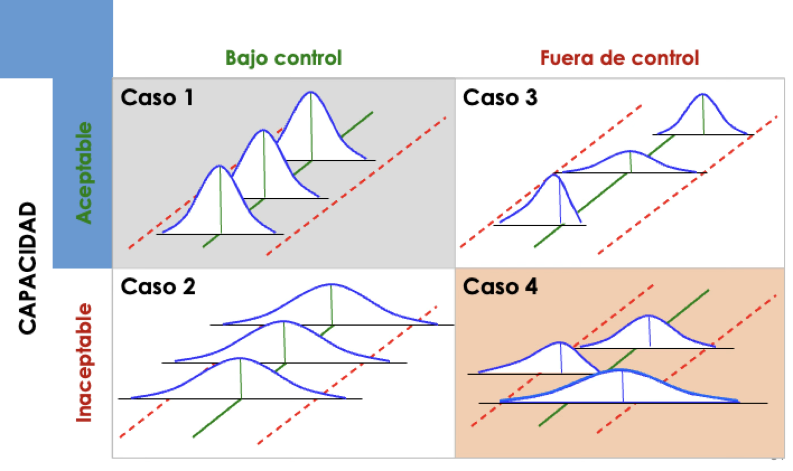
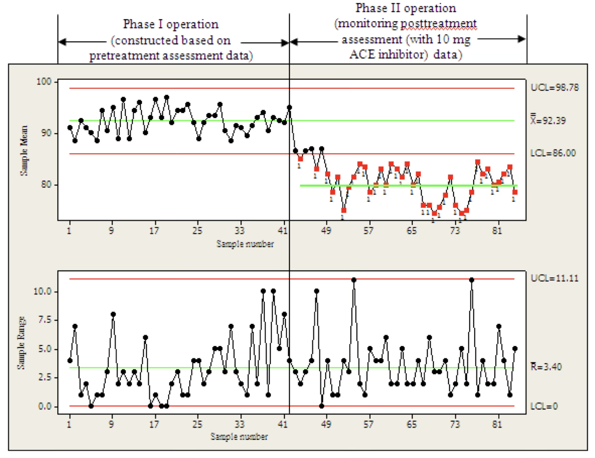

Gráficas de Control
IN2032: Análisis Estadístico de Datos
Departmento de Ingeniería Industrial
Agenda
Gráficas para Variables Numéricas
Gráficas para Variables Discretas
Carguemos las librerías
Antes de empezar, carguemos las librerías que usaremos hoy.
En el cógido de arriba, indicamos que utilizaremos la función ttest_1samp() y ttest_ind() de la librería scipy.stats.
Gráficas para variables numéricas
Idea básica: Usa la Regla Empirica

Para una distribución normal:
Alrededor del 68% de la población se encuentra en el intervalo \([\mu - \sigma, \; \mu + \sigma]\).
Aproximadamente el 95% de la población se encuentra en el intervalo \([\mu - 2\sigma, \; \mu + 2\sigma]\).
Aproximadamente el 99.7% de la población se encuentra en el intervalo \([\mu - 3\sigma, \; \mu + 3\sigma]\).
Si un proceso esta bajo control, entonces el 99.7% de los valores de la catacterística de calidad del producto deben de estar entre \(\mu \pm 3 \sigma\).
Observaciones que están fuera de esos límites indica que el proceso esta fuera de control. Es decir, que su media no es \(\mu\).
Un reto en esto es que los valores de \(\mu\) y \(\sigma\) no se conocen. Además, que la variabilidad del proceso podría no estar bajo control.
Las gráficas de control proveen de métodos para estimar \(\mu\) y \(\sigma\) usando grupos de 1 o más observaciones que son recolectadas a través del tiempo.
Clasificación de procesos

Normalidad es relevante
La regla empírica implica que los datos utilizados en la gráfica de control deben de seguir una distribución normal. Para probar normalidad, utilizamos la prueba de Shapiro-Wilk:
\(H_0\): Los datos siguen una distribución normal
Contra
\(H_1\): Los datos no siguen una distribución normal
Si el valor p de la prueba es pequeño (digamos, menor que 0.05), rechazamos \(H_0\) y concluimos que los datos no siguen una distribución normal. De lo contrario, concluimos que los datos siguen una distribución normal. Mas adelante veremos como hacer esto en Python.
Gráficas de control para variables numéricas
Nos enfocaremos en las siguientes gráficas de control.
Gráfico de promedios-rangos (\(\bar{X}\) y \(R\)) para subgrupos de 8 o menos observaciones.
Gráfico I-MR para valores individuales (o subgrupos de tamaño 1).
Gráfica de promedios y rangos
La gráfica de promedios y rangos (y también la gráfica I-MR) consisten de dos elementos:
El valor medio (promedio) de una característica de calidad (gráfica \(\bar{X}\)). Esta gráfica monitorea si la media está bajo control.
La variabilidad de la característica de calidad (gráfica \(R\)). Esta gráfica monitorea si la variabilidad está bajo control.
Se asume que los promedios de los subgrupos siguen una distribución normal.
Notación perliminar
Recuerda que hay \(k\) subgrupos con \(n\) observaciones cada uno. Las observaciones del i-ésimo subgrupo se denotan como \(x_{i1}, x_{i2}, \ldots, x_{in}\), donde \(i = 1, \ldots, k.\).
El promedio del i-ésimo grupo es \(\bar{X}_i = \frac{x_{i1} + x_{i2} + \cdots + x_{in}}{n}\).
El rango del i-ésimo grupo es \(R_i = \max{(x_{i1},x_{i2}, \ldots, x_{in})} - \min{(x_{i1},x_{i2}, \ldots, x_{in})}\).
El gran promedio \(\bar{\bar{X}} = \frac{\bar{X}_1 + \bar{X}_2 + \cdots + \bar{X}_k}{k}\).
El rango promedio \(\bar{R} = \frac{R_1 + R_2 + \cdots + R_k}{k}\).
Gráfica \(\bar{X}\)
Los elementos de la gráfica \(\bar{X}\) son:
La línea central de la gráfica está dada por \(\bar{\bar{X}}\).
El límite de control superior es: \(\bar{\bar{X}} + A_2 \bar{R}\).
El límite de control inferior es: \(\bar{\bar{X}} - A_2 \bar{R}\).
Donde \(A_2\) es una constante que se obtiene de tablas especiales dependiendo del tamaño del subgrupo (\(n\)).
Técnicamente, la constante \(A_2\) hace que \(A_2 \bar{R}\) sea un buen estimador de \(3\sigma\) en la regla empírica.
Gráfica \(R\)
Los elementos de la gráfica \(R\) son:
La línea central de la gráfica está dada por \(\bar{R}\).
El límite de control superior es: \(D_4 \bar{R}\).
El límite de control inferior es: \(D_3 \bar{R}\).
Donde \(D_3\) y \(D_4\) son constantes que se obtienen de tablas especiales y dependen del tamaño del subgrupo (\(n\)). Estas constantes aseguran que los límites tengan propiedades deseables.
| Tamaño de subgrupo (\(n\)) | \(A_2\) | \(D_3\) | \(D_4\) |
|---|---|---|---|
| 2 | 1.880 | 0 | 3.267 |
| 3 | 1.023 | 0 | 2.574 |
| 4 | 0.729 | 0 | 2.282 |
| 5 | 0.577 | 0 | 2.114 |
| 6 | 0.483 | 0 | 2.004 |
| 7 | 0.419 | 0.076 | 1.924 |
| 8 | 0.373 | 0.136 | 1.864 |
| 9 | 0.337 | 0.184 | 1.816 |
| 10 | 0.308 | 0.223 | 1.777 |
Ejemplo 1
La fuerza de tracción de un cable conectado a un circuito integrado está bajo monitoreo.
Un ingeniero recopilo la fuerza de tracción de 20 subgrupos de cables tomados a través del tiempo. Cada subgrupo contiene 3 cables.
El archivo “Pull_Strength.xlsx” contiene los datos.
Construye las gráficas \(\bar{X}\) y \(R\).
Encuentra los puntos que están fuera de control.
Construyendo gráficas de control en Python
Carguemos los datos que están en el archivo “Pull_Strength.xlsx”
Cuidado!
La variable Subgrupo es categorica! Entonces, debemos de informar a Python sobre esto usando la función pd.Categorical().
Veamos el resultado:
Evaluando la normalidad de los promedios en Python
Gráfica de valores individuales
En muchas situaciones, los subgrupos constan de una observacion (\(n=1\)). Por ejemplo:
Se usa la tecnología de inspección y medición automatizada, y se analiza cada unidad fabricada.
La rapidez con que se saca la producción es muy lenta.
Las mediciones repetidas del proceso tan solo difieren por el error de laboratorio o analisis.
En estas situaciones, usamos la gráfica de control para mediciones individuales. Aquí, se asume que las observaciones individuales siguen una distribución normal.
Notación
En este caso, hay \(n=1\) observación en cada uno de los \(k\) subgrupos.
Podemos usar una notación más simple para las observaciones de cada subgrupo: \(x_{1}, x_{2}, \ldots, x_{k}\), donde \(x_i\) es la observación del i-ésimo grupo.
- El gran promedio es \(\bar{X} = \frac{x_1 + x_2 + \cdots + x_k}{k}\).
Rango móvil
La gráfica de mediciones individuales usa el rango móvil de dos observaciones sucesivas para estimar la variabilidad del proceso.
El rango móvil del i-ésimo grupo se define como \(MR_i = |x_i - x_{i-1}|\). Es decir, la diferencia absoluta entre la observación actual y la anterior.
El rango móvil promedio es \(\bar{MR} = \frac{MR_1 + MR_2 + \cdots + MR_{k-1}}{k - 1}\).
Gráfica \(\bar{X}\) (versión individual)
Los elementos de la gráfica \(\bar{X}\) individual son:
La línea central de la gráfica está dada por \(\bar{X}\).
El límite de control superior es: \(\bar{X} + 3 \frac{\bar{MR}}{1.128}\).
El límite de control inferior es: \(\bar{X} - 3 \frac{\bar{MR}}{1.128}\).
Donde el 1.128 se obtiene de tablas especiales.
Gráfica \(R\) (versión individual)
Los elementos de la gráfica \(R\) individual son:
La línea central de la gráfica está dada por \(\bar{MR}\)
El límite de control superior es: \(3.267\bar{MR}\).
El límite de control inferior es: \(0\).
Donde el 0 y 3.267 son constantes que se obtienen de tablas especiales.
Ejemplo 2
La viscosidad de un producto químico se mide cada hora. Veinte muestras cada una de tamaño 1 se encuentran en el archivo “Viscosity.xlsx.”
Utilizando todos los datos, calcula los límites de control de observaciones individuales y gráficos de rangos móviles.
Encuentre las muestras que están fuera de control. Reproduce el gráfico de control sin esas muestras.
Western Electric Rules
Cualquiera de las siguientes condiciones es evidencia de que un proceso está fuera de control:
Cualquier punto trazado fuera de los límites de control de \(3\sigma\).
Dos de tres puntos consecutivos que se trazan por encima del límite superior de \(2\sigma\), o dos de tres puntos consecutivos se ubican por debajo del límite inferior de \(2\sigma\).
Cuatro de cinco puntos consecutivos que se trazan por encima del límite superior de \(1\sigma\), o cuatro de cinco puntos consecutivos se ubican por debajo del límite inferior de \(1\sigma\).
Ocho puntos consecutivos trazados en el mismo lado de la línea central.
Discusión
Para subgrupos de una o más observaciones, se recomienda primero estudiar la carta \(R\) porque si la variabilidad del proceso no es constante con el tiempo, los límites de control calculados para la carta \(\bar{X}\) pueden llevar a conclusiones falsas.
Ten cuidado al interpretar la gráfica \(R\) individual porque los rangos móviles están correlacionados. Esta correlación con frecuencia puede inducir un patrón de cambios o ciclos en la gráfica.
Las gráficas de valores individuales son mucho mejores para detectar cambios grandes. Para detectar cambios pequeños, la gráfica de control de suma acumulada es una mejor opción.
Gráficas para variables categóricas
Las gráficas de control para variables categóricas son importantes por varias razones:
Existen datos categóricos en cualquier situación técnica o administrativa
Los datos categóricos generalmente están disponibles
Los datos categóricos generalmente se obtiene de forma rápida y barata.
La mayoría de los datos recabados en un informe para la Gerencia con frecuencia es en forma de datos categóricos (bueno o malo) y éste puede beneficiar el análisis de la gráfica de control
Tipos de defectos
Defectivo es cuando una unidad entera no logra el criterio de aceptación, independientemente del número de defectos en la unidad
Un defecto es el incumplimiento de uno de los criterios de aceptación. Una unidad defectuosa puede tener múltiples defectos.
El criterio de conformidad debe estar claramente definido así como los procedimientos para decidir si los criterios se cumplen para producir resultados consistentes sobre el tiempo
Grafica p
Evalúa la fracción o porcentaje de unidades defectuosas
Se utiliza en las siguientes situaciones:
- Decisiones Aceptar/Rechazar con tamaño de subgrupo constante (o variable):
- Proporción de defectuosos
- Proporción de artículos arriba (o abajo) de un valor nominal
- Proporción de conformidad
- Decisiones de juicio:
- Proporción de artículos dentro de una categoría especificada
Notación
Recuerda que tenemos \(k\) subgrupos y \(n\) unidades en cada subgrupo.
- \(n_i\) es el número de unidades defectuosas en el i-ésimo subgrupo.
- \(p_i = n_i /n\) es la proporción de unidades defectuosas en el i-ésimo subgrupo.
- \(n p_i\) es el número de unidades defectuosas en el i-ésimo subgrupo.
- El promedio de las proporciones es \(\bar{p} = \frac{n p_1 + n p_2 + \cdots + n p_k}{nk}\).
Gráfica p
Los elementos de la gráfica p son:
La linea central de la gráfica está dada por \(\bar{p}\).
El límite de control superior es: \(\bar{p} + 3 \sqrt{ \frac{\bar{p} (1- \bar{p})}{n}}\).
El límite de control inferior es: \(\bar{p} - 3 \sqrt{ \frac{\bar{p} (1- \bar{p})}{n}}\).
Ejemplo 3
El concentrado de jugo de naranja congelado se presenta en latas de cartón de 6 onzas.
Estas latas se forman en una máquina girándolas a partir de cartón y colocándoles un panel inferior de metal.
Al inspeccionar una lata, podemos determinar si, cuando está llena, podría tener fugas en la costura lateral o alrededor de la junta inferior.
Tal lata no conforme tiene un sello inadecuado ya sea en la costura lateral o en el panel inferior.
Hagamos una gráfica de control para mejorar la fracción de latas no conformes producidas por esta máquina.
Para establecer el gráfico de control, se seleccionaron 30 muestras de \(n\) = 50 latas cada una a intervalos de media hora durante un período de tres turnos en los que la máquina estuvo en funcionamiento continuo.
Los datos están en el archivo de excel “Juice.xlsx”.
En Python
Gráfica np
Evalúa el número de unidades defectuosas
Asume que el tamaño de los subgrupos es constante.
Los elementos de la gráfica np son:
- La linea central de la gráfica está dada por \(\bar{np}\).
- El límite de control superior es: \(n\bar{p} + 3 \sqrt{n \bar{p} (1- \bar{p})}\).
- El límite de control inferior es: \(n\bar{p} - 3 \sqrt{n \bar{p} (1- \bar{p})}\).
En Python
Gráfica p contra Gráfica np
Gráfica p:
La gráfica p se utiliza cuando el tamaño de la muestra varía de subgrupo a subgrupo.
Monitorea la proporción de unidades no conformes en una muestra.
Es útil cuando el tamaño de la muestra es relativamente pequeño y variable.
Se calcula como el número de unidades no conformes dividido por el tamaño de la muestra.
Gráfica np:
La gráfica np se utiliza cuando el tamaño de la muestra permanece constante de subgrupo a subgrupo.
Monitorea el número de unidades no conformes en una muestra, en lugar de la proporción.
Se usa cuando el tamaño de la muestra es constante y relativamente grande.
Representa directamente el número de unidades no conformes en cada muestra.
Preguntas de práctica para examen
Cierto tipo de circuito integrado está conectado a su estructura mediante cinco cables.
Se tomaron treinta muestras de cinco unidades cada una y se midió la fuerza de tracción (en gramos) de un cable en cada unidad.
Los datos se presentan en el archivo “Cables_Circuito.xlsx” en Canvas.
Crea la gráfica de control de promedios-rangos.
¿Está el proceso bajo control?
Las gráficas que hemos visto en esta sección se conocen como gráficas de fase 1.
Gráficas de Fase 1 se usan para el análisis inicial del proceso. Su objetivo es evaluar la estabilidad del proceso determinando si está en un estado de control estadístico, es decir, si está operando consistentemente a lo largo del tiempo.
Gráficas de Fase 2 emplea después de que un proceso ha sido establecido como estable en la Fase I. Sirve para monitorear el rendimiento continuo del proceso y asegurarse de que permanezca en un estado de control estadístico, además de detectar cambios o desviaciones que puedan ocurrir con el tiempo.

Return to main page

Tecnológico de Monterrey